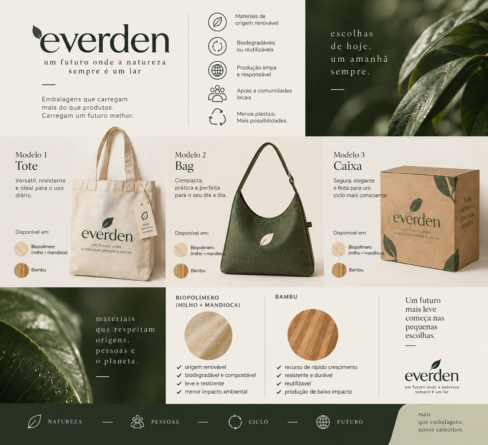
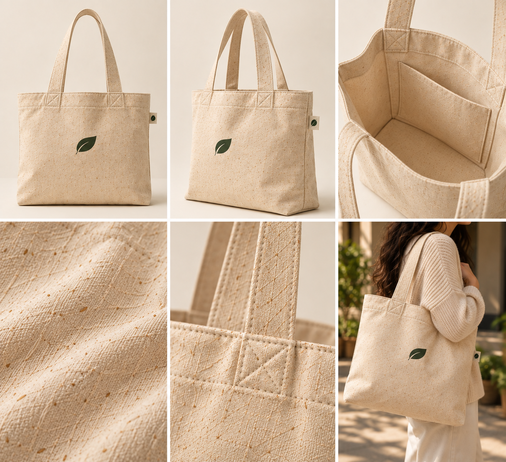
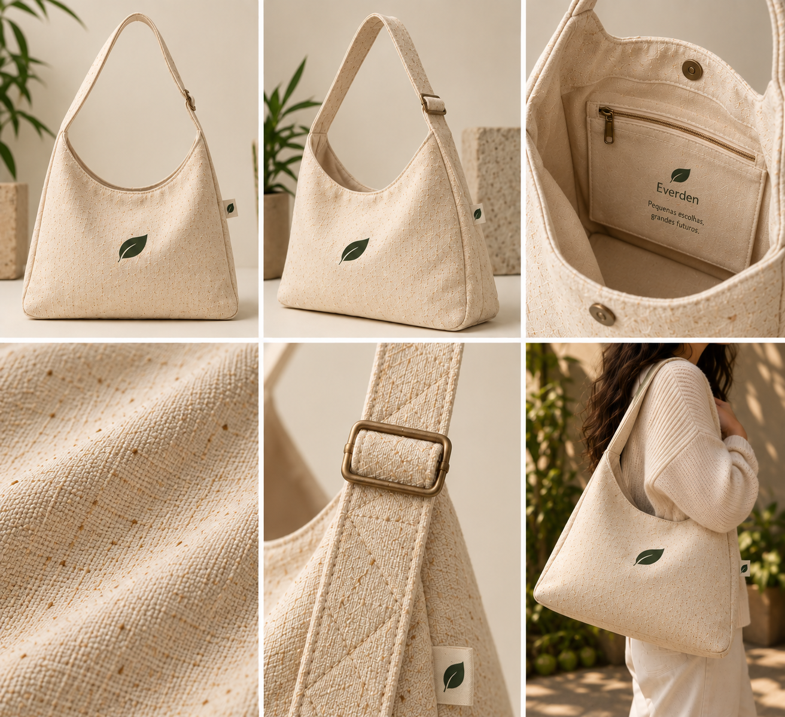
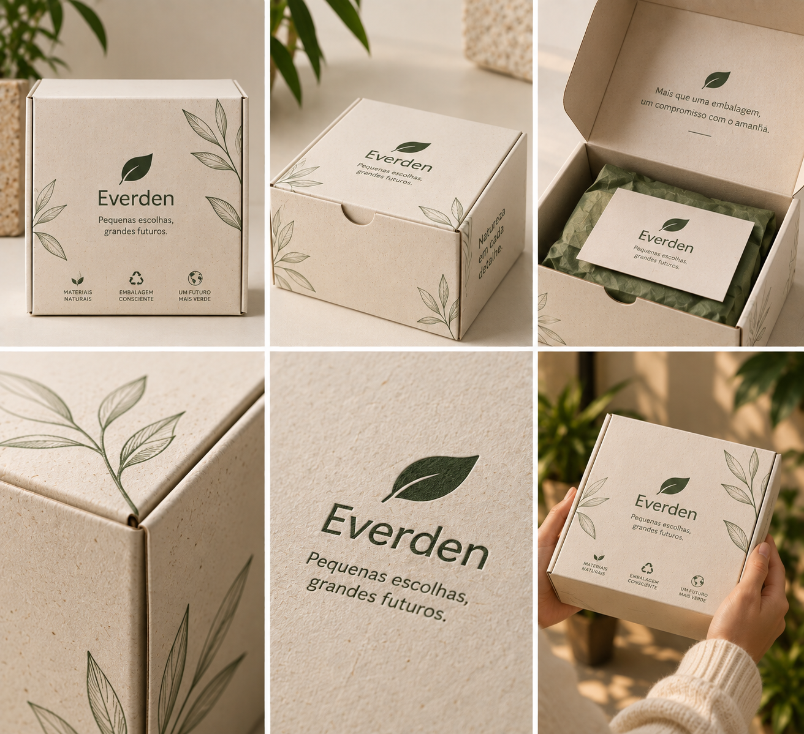

Modelo 01
Tote
Ampla e versátil, para compras, faculdade, trabalho e o transporte do dia a dia.
Ver produtoCatálogo sustentável
A Everden desenvolve bolsas e embalagens a partir de matérias-primas de origem renovável — pensadas para transportar, armazenar e embalar o dia a dia com mais consciência.
Quem somos
O nome Everden reúne dois sentidos que orientam tudo o que criamos. A proposta é unir funcionalidade, design e responsabilidade ambiental para substituir alternativas convencionais e incentivar escolhas mais conscientes.

Categorias
Cada modelo nasce da mesma ideia: reutilizar mais e descartar menos.
Ampla e versátil, para compras, faculdade, trabalho e o transporte do dia a dia.
Ver produtoCompacta por fora e funcional por dentro, com alça ajustável e compartimento interno.
Ver produtoEmbalagem resistente e minimalista para presentes, produtos e pequenas encomendas.
Ver produtoCatálogo
Escolha o material e o acabamento para visualizar a variação correspondente.

Galeria com seis vistas do produto — muda conforme a variação.
R$ 49,90
Uma bolsa versátil criada para acompanhar diferentes momentos do dia. Formato amplo, alças reforçadas e estrutura simples, priorizando funcionalidade e reutilização.
Variação selecionada: Milho + Mandioca · Natural

Galeria com seis vistas do produto — muda conforme a variação.
R$ 59,90
Compacta por fora e funcional por dentro, criada para carregar os itens essenciais sem abrir mão de um design moderno. Alça ajustável, compartimento interno e fechamento por botão de pressão.
Variação selecionada: Milho + Mandioca · Natural

Galeria com seis vistas do produto — muda conforme a variação.
R$ 34,90
A Everden Box transforma a embalagem em parte da experiência. Estrutura rígida e visual minimalista para acondicionar presentes, produtos e pequenas encomendas, reduzindo a necessidade de plásticos descartáveis.
Variação selecionada: Natural
Materiais
Trabalhamos com fontes renováveis para criar produtos pensados para durar e ser reutilizados.
Milho e mandioca são fontes vegetais ricas em amido. Na proposta da Everden, derivados dessas matérias-primas são usados no desenvolvimento de materiais de origem renovável para determinadas linhas de produtos.
O bambu é uma matéria-prima vegetal. Na proposta da Everden, materiais à base de bambu são utilizados para criar produtos com acabamento natural, provenientes de recursos renováveis.
Transparência: por ser um projeto acadêmico e fictício, a Everden não declara certificações, percentuais de decomposição ou de redução de carbono. Não afirmamos que qualquer produto seja automaticamente “100% biodegradável”, “100% sustentável” ou “carbono neutro”.
Sustentabilidade
Princípios que guiam o conceito da marca — do material à relação com quem produz.
Priorizamos materiais de origem renovável e alternativas que possam reduzir a dependência de matérias-primas fósseis.
O conceito da marca prioriza processos eficientes, redução de desperdícios e uso responsável de recursos.
Buscamos embalagens minimalistas, reutilizáveis e com menor dependência de plásticos descartáveis.
Totes, bags e caixas são pensadas para serem utilizadas diversas vezes, prolongando sua vida útil.
Valorizamos uma cadeia produtiva baseada em condições de trabalho responsáveis e relações justas com fornecedores e produtores.
Everden é uma empresa fictícia criada para um projeto acadêmico. Por isso, não citamos certificações, ONGs parceiras, fábricas, selos oficiais ou números de impacto ambiental.
Comparar
Um resumo das principais características dos três modelos.
| Característica | Tote | Bag | Box |
|---|---|---|---|
| Preço | R$ 49,90 | R$ 59,90 | R$ 34,90 |
| Capacidade | ~13 L | ~6,5 L | ~5 L |
| Principal uso | Compras e cotidiano | Objetos pessoais | Embalagens e presentes |
| Reutilizável | Sim | Sim | Sim |
| Milho + Mandioca | Disponível | Disponível | Disponível |
| Bambu | Disponível | Disponível | Disponível |
| Verde Everden | Disponível | Disponível | Disponível |
Em telas menores, deslize a tabela na horizontal para ver todas as colunas.
Quer levar a proposta da Everden para o seu dia a dia? Conte qual produto chamou sua atenção.
Fale com a Everden